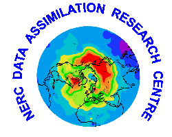

Reading Assimilated Atmospheric Satellite Data
 Introduction
Introduction
The Reading Assimilated Atmospheric Satellite Data include
three-dimensional fields of temperature, ozone and water vapour obtained by
assimilation of satellite observations (UARS MLS, GOME, possibly other
satellite data) and a variety of operational observations into the HADAM3
version of the troposphere-stratosphere general circulation Unified Model (UM).
This data set is currently being produced as part of the Assimilation of
Research Satellite Data Using a General Circulation Model of the Troposphere
and Stratosphere project, under the Assimilation of
Remote-sensed Data for Applications in the Atmospheric and Oceanographic
Sciences (ARDAAOS) NERC thematic programme.
Several versions of this data set will be produced, corresponding to successive
versions of the assimilation scheme and newly available observational data sets.
 Access to data
Access to data
The data sit in the BADC
ARDAAOS archive.
Access to this data set is currently restricted to the programme participants
and to external scientists who would have been personally authorised by the
project PIs (see Who to contact below).
Regarding the application procedure, please refer to the
ARDAAOS Web page.
 Format
Format
The data file format is
NetCDF.
 Documentation
Documentation
Several versions of this data set will be issued, corresponding to different
versions of the assimilation scheme.
Further information on the data is included in the accompanying
metadata files.
 Links.
Links.
 Who to contact
Who to contact
- If you are not a participant to the Assimilation of Remote-sensed Data
for Applications in the Atmospheric and Oceanographic Sciences (ARDAAOS)
programme but wish to access the data, please contact the
BADC, stating that you would like to access
the Reading Assimilated Atmospheric Satellite Data and
apply for access to the
ARDAAOS data.
We will ask the PIs' authorisation on your behalf and let you know their
decision.
-
For additional information on this data set, please contact the project
principal investigators
Prof Alan O'Neill and
Dr William Lahoz.